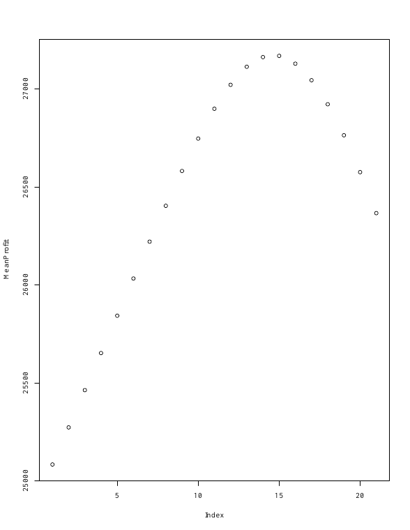

Project Summary
Airline Overbooking Decision Model
I compared ticket limits for a 132-seat flight when some passengers might miss departure. Starting from a deterministic model, I simulated 1,000 flights per ticket limit using binomial no-shows and accounted for refunds and bumping costs. The highest plotted average profit occurred around 14 extra tickets under the model’s assumptions.
Skills and What I Learned
I learned to replace a single expected-outcome calculation with a range of simulated outcomes. Changing assumptions about no-shows, refunds, and bumping costs can change the preferred ticket limit.
Model Assumptions
Decision Modeling in R
Make a Non-Deterministic Decision Model Based on a Deterministic Model
The model used a $200 fare and a 10% no-show probability. Each no-show received a refund of half the fare, and each bumped passenger cost 2.5 times the fare. I compared limits from 132 to 152 tickets and averaged simulated profit for each limit.
Simulated Profit by Overbooking Level

This is the best result among the simulated choices under the project’s assumptions. A different no-show rate or bumping cost could change the preferred ticket limit.